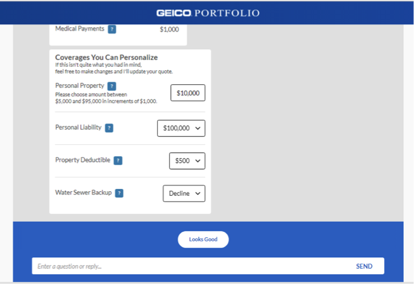

In this example, 'contact' triggers the bot to offer the most common reasons customers call in.
The case studies are a sample across years of effort at GEICO. I worked on creating chatbots, on flows that quoted insurance, and Interactive Voice Response (IVR) phone systems, with a dash of Alexa skills too.
These two studies focus on the biggest lifts: experiments with chatbots, and GEICO's first implementation of a conversational experience, backed by IBM's Watson system.
Our goal with the website chatbot was to help customers get quick answers and avoid waiting on hold for an agent, being routed incorrectly, or searching through our website when we could provide a quick answer.
I reviewed data from our analytics teams, customer feedback, agent feedback, and logs once chatbots were live to shape experiments with the bot.
In this example, 'contact' triggers the bot to offer the most common reasons customers call in.
We also tested out common questions and paths to resolving them, like how to adjust your policy after getting married.
GEICO wanted to focus its chatbot experiments on its main website, keeping the bot focused on its 'Contact Us' page to start. We wanted to identify scenarios where agent time could be better spent, and where customers were sitting on hold too long when they might be able to find what they needed on our website, but were getting lost.
GEICO had more than 15 million policies in force at the time. That's a lot of customers, across many lines of business, which leads to a lot of possible questions. We had to narrow our scope - ruthlessly prioritize. Of all the places we could take this, which questions would get the most return, for customers and our phone staff?
We had interaction data from our website logs, data from our IVR team to tell us about call routing, and experience from our phone agents. We also had some basic data about transactions that happened often, things like adding or removing someone from a policy, or changing an address.
We found the flow that showed customers our phone numbers to be very effective, because 'sales', 'service', and 'claims' can be ambiguous to customers when they're navigating an automated voice system. We added images and used buttons and links, and used experiments to compare content and strengthen the bot's performance.
We launched a brand new experience for quoting renters insurance, using IBM's Watson technology. The goal was for customers to get the sense they were talking with an agent. Content needed to be friendly, the back-and-forth seamless when possible. We had no research budget, no designer, and no experience. All things considered, we did pretty well.

We had a lot of debate about how 'conversational' this tool should be. There were a few places where it just didn't make sense, and coverages was one of them. We couldn't expect a customer to know what to ask, or to know what was available to them, so we insisted on adding more traditional elements like dropdowns. THis approach also allowed us to meet our legal and compliance requirements.

We wanted to give users access to help in a way they would understand. They were able to break in and ask a question at any time, but this was 2016 - chat experiences like this weren't common. We placed tooltips in critical spots, where we thought customers might need them.
The research focused on the parts of the chat experience that shape confidence before a user reaches a final answer. Entry cues, message rhythm, and the handoff between automated guidance and support options all affect whether the experience feels helpful or fragmented.
Looking at two flows together makes the differences easier to evaluate without turning either clip into an isolated example. The result is a clearer read on which interaction patterns should stay consistent across GEICO support moments.